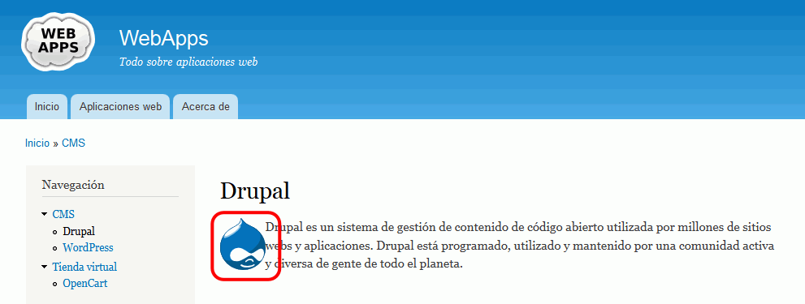

He empezado a actualizar esta lección para Drupal 8, pero no he terminado de hacerlo.
He empezado a actualizar esta lección para Drupal 8, pero no he terminado de hacerlo.
En esta lección se proponen ejercicios para conocer y utilizar Drupal. Se pueden consultar las soluciones de estos ejercicios de Drupal, aunque se recomienda intentar realizarlos primero sin recurrir a estas soluciones.
En este ejercicio se configurará Drupal para crear un sitio web ficticio llamado WebApps y que estará dedicado a contener información sobre aplicaciones web.
En el caso de las licencias Creative Commons, se recomienda utilizar el selector de licencias de Creative Commons. El ejemplo siguiente corresponde a la licencia CC-BY-SA 4.0 internacional:
<p style="text-align: center"><a href="https://creativecommons.org/licenses/by-sa/4.0/deed.es_ES" rel="license"><img alt="Licencia de Creative Commons" src="https://licensebuttons.net/l/by-sa/4.0/88x31.png" /></a><br />
Este obra está bajo una <a href="https://creativecommons.org/licenses/by-sa/4.0/deed.es_ES" rel="license">licencia de Creative Commons Reconocimiento-CompartirIgual 4.0 Internacional</a>.</p>
El pie de página debe contener únicamente el enlace de Contacto y el nuevo bloque:
En este ejercicio se añadirán varias páginas básicas y artículos al sitio web creado en el ejercicio anterior.
Nota:
WebApps es un sitio web dedicado a las aplicaciones web en general
Una aplicación web es una aplicación a la que los usuarios acceden a través de una red como Internet o de una intranet. El término también puede referirse a una aplicación codificada en un lenguaje de programación admitido por un navegador (por ejemplo, JavaScript combinado con HTML).
Un Sistema de Gestión de Contenido (en inglés, CMS, Content Management System) es un programa de ordenador que permite publicar, editar y modificar contenidos así como mantenerlos mediante un entorno común. Estos sistemas de gestión de contenidos proporcionan herramientas para gestionar el flujo de trabajo en entornos colaborativos, de forma manual o automatizada.
Una tienda virtual es un sitio web que vende productos o servicios y por lo general tiene un carro de compra en línea asociado a ella. El cliente puede ver imágenes de los productos, leer sus especificaciones, saber su precio final, (impuestos, transporte y manipulación incluidos) y finalmente adquirirlos.
Drupal es un sistema de gestión de contenido de código abierto utilizada por millones de sitios webs y aplicaciones. Drupal está programado, utilizado y mantenido por una comunidad activa y diversa de gente de todo el planeta.
WordPress es un sistema de gestión de contenido enfocado a la creación de blogs y basado en PHP y MySQL. Destacan en él su arquitectura de extensiones y su sistema de plantillas. WordPress es el sistema de blogs más popular de la Web.
OpenCart es una aplicación de comercio electrónico de código abierto preparada para funcionar desde el primer momento. Basta con instalar, seleccionar la plantilla, introducir productos y ya está todo preparado para empezar a recibir pedidos.
Nace hoy WebApps, otro portal dedicado a ofrecer información sobre todo tipo de aplicaciones web.
Se ha añadido una nueva categoría de aplicaciones: CMS.
Se ha añadido una nueva categoría de aplicaciones: Tienda virtual.
Se ha añadido una nueva aplicación en la categoría CMS: Dupal.
Se ha añadido una nueva aplicación en la categoría Tienda virtual: OpenCart
Se ha añadido una nueva aplicación en la categoría CMS: WordPress.
El 19 de noviembre de 2015 se ha publicado Drupal 8.0.
El 27 de septiembre de 2015 se ha publicado openCart 2.1.0.0.
El 8 de diciembre de 2015 se ha publicado WordPress 4.4.
En este ejercicio se modificará el formato en el que se muestran las fechas en Drupal.

Modificar el formato de fecha y hora de manera que Drupal muestre las fechas como DD/MM/AA (día / mes / año):

En este ejercicio se añadirán enlaces a otras páginas del sitio en una de las páginas de sitio.
Nota:
En este ejercicio se crearán opciones en los menús Principal y Navegación que enlacen a las páginas básicas creadas en el ejercicio anterior.
y que haciendo clic en ellas se vean enlaces a las páginas básicas Drupal y WordPress y OpenCart
En este ejercicio se insertará una imagen en una de las páginas.
Logotipos de las aplicaciones:


Las taxonomías permiten crear conjuntos de términos predefinidos (vocabularios) que se pueden asociar al contenido generado, de manera que se puedan localizar todos los elementos asociados a un determinado término.
Referencias: